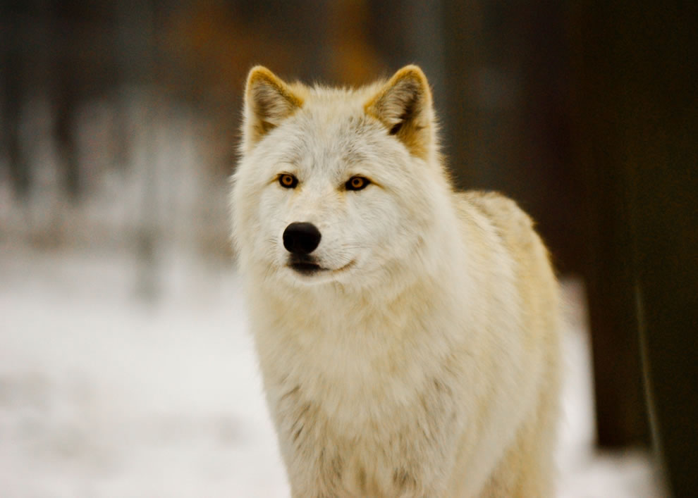
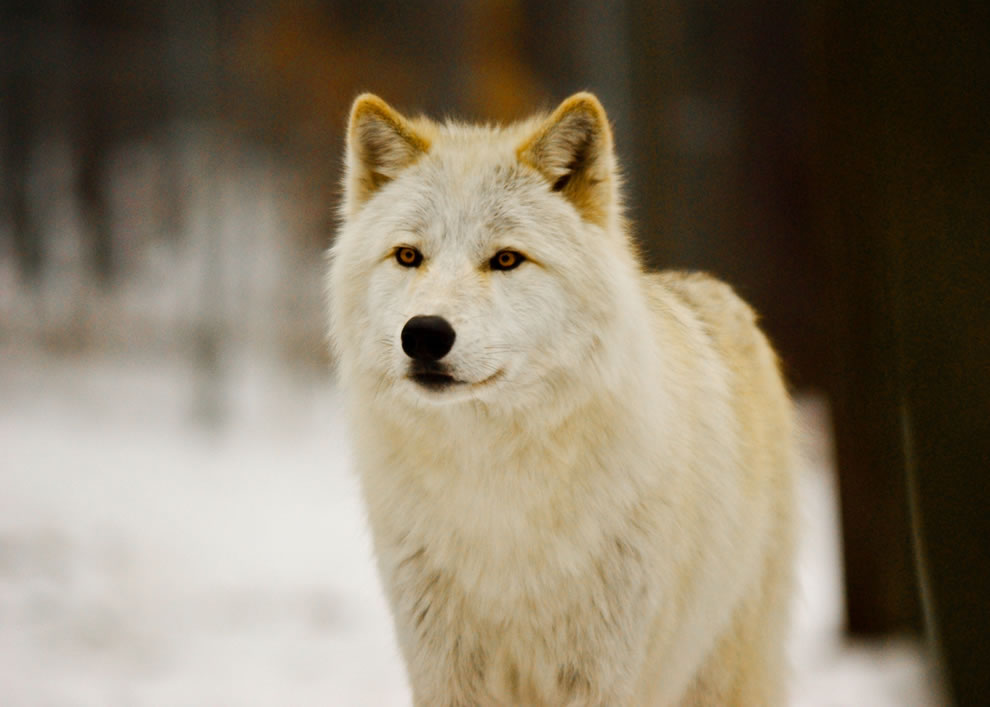

- Tên: Chó sói xám hay Sói xám, còn được gọi là sói lông xám, chó sói phương Tây, hoặc gọi đơn giản là sói (danh pháp hai phần: Canis lupus) là một loài động vật có vú thuộc bộ Ăn thịt (Carnivora). Sói xám là thành viên lớn nhất trong họ Chó và cũng là loài chó sói nổi tiếng nhất. Chiều cao vai của nó dao động trong khoảng từ 0,6m đến 0,9m (26–36 inch) và thông thường có trọng lượng từ 32 đến 62 kilôgam (70–135 pound). Như những phân tích bằng phương pháp xác định trình tự DNA và các nghiên cứu phiêu biến di truyền, chó sói xám có chung tổ tiên với chó nhà (Canis lupus familiaris).[4] Sói xám là thành viên chuyên biệt thứ hai của chi Canis, sau loài sói Ethiopia, được thể hiện bằng cách thích nghi hình thái của nó để săn những con mồi lớn, tính chất sinh lý cao hơn, và hành vi biểu đạt phức tạp của nó.
- Tên: Tuy nhiên, nó có liên quan chặt chẽ đến các loài Canis nhỏ hơn, chẳng hạn như chó sói phương Đông, sói đồng cỏ, và chó rừng lông vàng, để tạo ra các giống lai màu mỡ. Nó là loài duy nhất của Canis có một phạm vi bao gồm cả thế giới cũ và mới, và có nguồn gốc từ Á-Âu trong thời kỳ Pleistocen, thuộc địa Bắc Mỹ vào ít nhất ba dịp riêng biệt trong vùng Rancholabrean. Nó là một động vật xã hội, đi di cư trong các gia đình hạt nhân bao gồm một cặp giao phối, đi kèm với con cái trưởng thành của cặp đôi. Sói xám thường là một loài động vật ăn thịt đầu bảng trong suốt phạm vi của nó, chỉ có con người và loài hổ là có thể gây ra một mối đe dọa nghiêm trọng cho nó. Nó săn mồi chủ yếu là những con thú móng guốc cở lớn, mặc dù nó cũng ăn động vật nhỏ hơn, vật nuôi, thậm chí là cà rốt và rác.
- Sói xám là một trong những loài động vật được biết đến nhiều nhất và được nghiên cứu nhiều nhất trên thế giới, với nhiều cuốn sách được viết về nó hơn bất kỳ loài động vật hoang dã nào khác. Nó có một lịch sử lâu dài về sự liên kết với con người, bị coi thường và bị săn đuổi trong hầu hết cộng đồng loài người vì các cuộc tấn công vào gia súc, trong khi ngược lại được tôn trọng trong một số xã hội nông dân và hái lượm. Mặc dù nỗi sợ hãi của sói là phổ biến trong nhiều xã hội loài người, phần lớn các cuộc tấn công người đã được ghi lại và quy cho các loài sói bị bệnh dại. Những con sói không dại đã tấn công và giết người, chủ yếu là trẻ em, nhưng điều này là hiếm, vì chó sói rất khó phát hiện trong tự nhiên do chúng chủ động sống xa người, và chúng đã phát triển một nỗi sợ hãi con người khi đã nhiều lần bị săn lùng bởi thợ săn và người chăn cừu.
Hình ảnh minh họa
